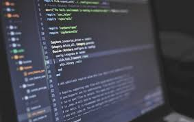
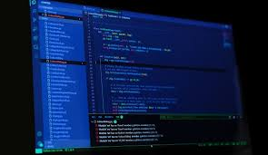

Filmik:
Galeria zdjęć z projektów:



Jestem programistą, który specjalizuje się w tworzeniu aplikacji webowych i mobilnych. Moje zainteresowania obejmują szeroką gamę technologii – od frontendowych frameworków takich jak React, po backend w Node.js. Lubię podejmować wyzwania i tworzę projekty, które angażują zarówno moje umiejętności techniczne, jak i kreatywność. W mojej pracy staram się łączyć technologię z estetyką, tworząc projekty, które nie tylko działają, ale także przyciągają użytkowników swoją funkcjonalnością i designem.
W codziennej pracy korzystam z nowoczesnych narzędzi i technologii, które pomagają mi w szybkim rozwiązywaniu problemów oraz automatyzowaniu wielu procesów. Współpraca z innymi programistami i tworzenie aplikacji zespołowych daje mi satysfakcję, ponieważ wierzę, że wspólna praca jest kluczem do tworzenia lepszych produktów.
W ramach swoich pasji do nowych technologii, zafascynowany jestem sztuczną inteligencją, analizą danych i uczeniem maszynowym. Uważam, że te dziedziny mają ogromny potencjał, aby zrewolucjonizować wiele aspektów naszego życia i pracy. W najbliższej przyszłości chciałbym podjąć głębsze kroki w kierunku nauki o danych oraz sztucznej inteligencji, w tym również rozwijać aplikacje oparte na algorytmach ML.
W ciągu swojej kariery stworzyłem wiele aplikacji webowych i mobilnych, które pomagają użytkownikom w rozwiązywaniu codziennych problemów. Projekty, które realizuję, obejmują takie dziedziny jak zarządzanie czasem, automatyzacja procesów w firmach, aplikacje wspierające edukację online i wiele innych. Każdy projekt traktuję indywidualnie i dostosowuję do specyficznych potrzeb użytkowników.
Moim celem na przyszłość jest dalszy rozwój w dziedzinie sztucznej inteligencji oraz pracy z dużymi zbiorami danych. Chcę tworzyć innowacyjne rozwiązania, które będą mogły usprawnić różne sektory życia codziennego, a także dążyć do rozwoju jako lider technologiczny w branży. Moim marzeniem jest stworzenie startupu technologicznego, który pomoże rozwiązać realne problemy społeczne, wykorzystując technologie takie jak AI czy blockchain.
Jestem osobą, która nie boi się wyzwań. Zawsze staram się dostarczać projekty na czas, zachowując wysoką jakość kodu. Moja pasja do technologii sprawia, że jestem zawsze gotowy do nauki i adaptacji do nowych narzędzi i języków programowania. Ponadto potrafię efektywnie współpracować z innymi członkami zespołu, co pozwala mi realizować większe projekty w sposób uporządkowany i efektywny.